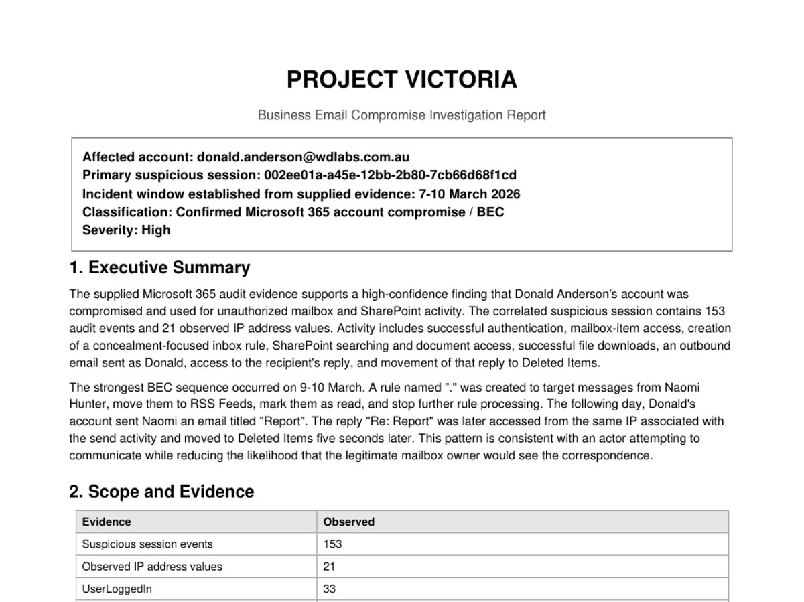

Microsoft 365 business email compromise investigation
Unified Audit Log analysis that confirmed a Microsoft 365 account compromise: mailbox access, a concealment inbox rule, SharePoint downloads, an email sent as the victim and deletion of the reply.
Lab work with synthetic or lab-provided data. No production systems or real customer data were involved.
Evidence

Summary
The supplied audit evidence supported a high-confidence finding that one user's account was compromised and used for unauthorized mailbox and SharePoint activity over four days. The strongest sequence: an inbox rule hid mail from a specific colleague, the account then emailed that colleague, and the reply was read and moved to Deleted Items five seconds later. That pattern is consistent with an attacker communicating while hiding the conversation from the real mailbox owner.
Evidence at a glance
| Audit evidence | Observed |
|---|---|
| Events in the suspicious session | 153 |
| Distinct IP address values | 21 |
| Successful logins (UserLoggedIn) | 33 |
| Mailbox items accessed | 13 |
| SharePoint file downloads | 14 |
| Inbox rules created | 1 |
| Outbound messages sent as the victim | 1 (3 duplicate audit records) |
| Replies moved to Deleted Items | 1 |
Timeline
| When | Event | Assessment |
|---|---|---|
| Day 1, 02:35 | Failed login, then success 13 seconds later | Earliest event in the session. Initial access method not established. |
| Day 1, 02:49 | Individual mailbox items accessed | Mailbox reconnaissance |
| Day 3, 07:10 | Inbox rule named "." created | Targets one colleague's mail, moves it to RSS Feeds and marks it read |
| Day 3, 07:20 onward | SharePoint searches, previews and PDF downloads | Collection of organizational documents |
| Day 4, 09:51 | Email titled "Report" sent from the account | Impersonation of the account owner |
| Day 4, 10:15 | Reply opened, then moved to Deleted Items 5 seconds later | Deliberate concealment |
MITRE ATT&CK mapping
| Technique | Evidence |
|---|---|
| T1078 Valid Accounts | Successful use of the victim's Microsoft 365 account |
| T1114 Email Collection | MailItemsAccessed events for individual messages |
| T1098 Account Manipulation | Malicious inbox rule altered mailbox behaviour |
| T1530 Data from Cloud Storage | SharePoint documents searched and downloaded |
| T1564 Hide Artifacts | Rule hid the colleague's mail; reply moved to Deleted Items |
Analyst mappings based on observed behaviour, not fields in the source logs.
Containment and remediation
- Reset the password and revoke active sessions and refresh tokens.
- Remove the malicious rule and audit all mailbox rules, forwarding, delegates and OAuth grants.
- Re-register strong MFA and review authentication methods for unauthorized changes.
- Validate the observed IPs against legitimate and service activity before blocking confirmed hostile infrastructure.
- Assess the sensitivity of downloaded documents for privacy, legal or regulatory escalation.
- Verify the "Report" conversation with the recipient through a trusted channel.
- Hunt the tenant for the same IPs, rule behaviour and subjects across other users.
What the evidence did not establish
The initial credential-theft method, whether MFA was bypassed, the body of the "Report" message and any financial impact. These are recorded as investigation gaps rather than inferred. Three Send records sharing a timestamp and message ID were treated as one message, not three.